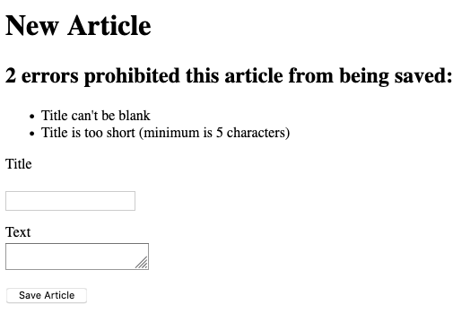

Getting Started with Rails: Extended Edition
19 Jan 2020This guide is an extended edition of the offical Getting Started with Rails guide.
This extended version has the following additions:
- A re-worked introduction to routing, showing clearer matching between routes and controllers.
- Creates and uses a model right after building the first route.
- Examples of HTML output generated by Rails helpers such as
link_to,form_withandtext_field.
This guide covers getting up and running with Ruby on Rails.
After reading this guide, you will know:
- How to install Rails, create a new Rails application, and connect your application to a database.
- The general layout of a Rails application.
- The basic principles of MVC (Model, View, Controller) and RESTful design.
- How to quickly generate the starting pieces of a Rails application.
Guide Assumptions
This guide is designed for beginners who want to get started with a Rails application from scratch. It does not assume that you have any prior experience with Rails.
Rails is a web application framework running on the Ruby programming language. If you have no prior experience with Ruby, you will find a very steep learning curve diving straight into Rails. There are several curated lists of online resources for learning Ruby:
Be aware that some resources, while still excellent, cover versions of Ruby as old as 1.6, and commonly 1.8, and will not include some syntax that you will see in day-to-day development with Rails.
What is Rails?
Rails is a web application development framework written in the Ruby programming language. It is designed to make programming web applications easier by making assumptions about what every developer needs to get started. It allows you to write less code while accomplishing more than many other languages and frameworks. Experienced Rails developers also report that it makes web application development more fun.
Rails is opinionated software. It makes the assumption that there is a "best" way to do things, and it's designed to encourage that way - and in some cases to discourage alternatives. If you learn "The Rails Way" you'll probably discover a tremendous increase in productivity. If you persist in bringing old habits from other languages to your Rails development, and trying to use patterns you learned elsewhere, you may have a less happy experience.
The Rails philosophy includes two major guiding principles:
- Don't Repeat Yourself: DRY is a principle of software development which states that "Every piece of knowledge must have a single, unambiguous, authoritative representation within a system". By not writing the same information over and over again, our code is more maintainable, more extensible, and less buggy.
- Convention Over Configuration: Rails has opinions about the best way to do many things in a web application, and defaults to this set of conventions, rather than require that you specify minutiae through endless configuration files.
Creating a New Rails Project
The best way to read this guide is to follow it step by step. All steps are essential to run this example application and no additional code or steps are needed.
By following along with this guide, you'll create a Rails project called
blog, a (very) simple weblog. Before you can start building the application,
you need to make sure that you have Rails itself installed.
TIP: The examples below use $ to represent your terminal prompt in a UNIX-like OS,
though it may have been customized to appear differently. If you are using Windows,
your prompt will look something like c:\source_code>
Installing Rails
Before you install Rails, you should check to make sure that your system has the proper prerequisites installed. These include Ruby and SQLite3.
Open up a command line prompt. On macOS open Terminal.app, on Windows choose
"Run" from your Start menu and type 'cmd.exe'. Any commands prefaced with a
dollar sign $ should be run in the command line. Verify that you have a
current version of Ruby installed:
$ ruby -v
ruby 2.7.0
Rails requires Ruby version 2.5.0 or later. If the version number returned is less than that number (such as 2.3.7, or 1.8.7), you'll need to install a fresh copy of Ruby.
TIP: To quickly install Ruby and Ruby on Rails on your system in Windows, you can use Rails Installer. For more installation methods for most Operating Systems take a look at ruby-lang.org.
If you are working on Windows, you should also install the Ruby Installer Development Kit.
You will also need an installation of the SQLite3 database. Many popular UNIX-like OSes ship with an acceptable version of SQLite3. On Windows, if you installed Rails through Rails Installer, you already have SQLite installed. Others can find installation instructions at the SQLite3 website. Verify that it is correctly installed and in your PATH:
$ sqlite3 --version
The program should report its version.
To install Rails, use the gem install command provided by RubyGems:
$ gem install rails
To verify that you have everything installed correctly, you should be able to run the following:
$ rails --version
If it says something like "Rails 6.0.0", you are ready to continue.
Creating the Blog Application
Rails comes with a number of scripts called generators that are designed to make your development life easier by creating everything that's necessary to start working on a particular task. One of these is the new application generator, which will provide you with the foundation of a fresh Rails application so that you don't have to write it yourself.
To use this generator, open a terminal, navigate to a directory where you have rights to create files, and type:
$ rails new blog
This will create a Rails application called Blog in a blog directory and
install the gem dependencies that are already mentioned in Gemfile using
bundle install.
NOTE: If you're using Windows Subsystem for Linux then there are currently some
limitations on file system notifications that mean you should disable the spring
and listen gems which you can do by running rails new blog --skip-spring --skip-listen.
TIP: You can see all of the command line options that the Rails application
builder accepts by running rails new -h.
After you create the blog application, switch to its folder:
$ cd blog
The blog directory has a number of auto-generated files and folders that make
up the structure of a Rails application. Most of the work in this tutorial will
happen in the app folder, but here's a basic rundown on the function of each
of the files and folders that Rails created by default:
| File/Folder | Purpose |
|---|---|
| app/ | Contains the controllers, models, views, helpers, mailers, channels, jobs, and assets for your application. You'll focus on this folder for the remainder of this guide. |
| bin/ | Contains the rails script that starts your app and can contain other scripts you use to setup, update, deploy, or run your application. |
| config/ | Configure your application's routes, database, and more. This is covered in more detail in Configuring Rails Applications. |
| config.ru | Rack configuration for Rack based servers used to start the application. For more information about Rack, see the Rack website. |
| db/ | Contains your current database schema, as well as the database migrations. |
| Gemfile Gemfile.lock |
These files allow you to specify what gem dependencies are needed for your Rails application. These files are used by the Bundler gem. For more information about Bundler, see the Bundler website. |
| lib/ | Extended modules for your application. |
| log/ | Application log files. |
| package.json | This file allows you to specify what npm dependencies are needed for your Rails application. This file is used by Yarn. For more information about Yarn, see the Yarn website. |
| public/ | The only folder seen by the world as-is. Contains static files and compiled assets. |
| Rakefile | This file locates and loads tasks that can be run from the command line. The task definitions are defined throughout the components of Rails. Rather than changing Rakefile, you should add your own tasks by adding files to the lib/tasks directory of your application. |
| README.md | This is a brief instruction manual for your application. You should edit this file to tell others what your application does, how to set it up, and so on. |
| storage/ | Active Storage files for Disk Service. This is covered in Active Storage Overview. |
| test/ | Unit tests, fixtures, and other test apparatus. These are covered in Testing Rails Applications. |
| tmp/ | Temporary files (like cache and pid files). |
| vendor/ | A place for all third-party code. In a typical Rails application this includes vendored gems. |
| .gitignore | This file tells git which files (or patterns) it should ignore. See GitHub - Ignoring files for more info about ignoring files. |
| .ruby-version | This file contains the default Ruby version. |
Hello, Rails!
To begin with, let's get some text up on screen quickly. To do this, you need to get your Rails application server running.
Starting up the Web Server
You actually have a functional Rails application already. To see it, you need to
start a web server on your development machine. You can do this by running the
following in the blog directory:
$ bin/rails server
TIP: If you are using Windows, you have to pass the scripts under the bin
folder directly to the Ruby interpreter e.g. ruby bin\rails server.
TIP: JavaScript asset compression requires you
have a JavaScript runtime available on your system, in the absence
of a runtime you will see an execjs error during asset compression.
Usually macOS and Windows come with a JavaScript runtime installed.
therubyrhino is the recommended runtime for JRuby users and is added by
default to the Gemfile in apps generated under JRuby. You can investigate
all the supported runtimes at ExecJS.
This will fire up Puma, a web server distributed with Rails by default. To see your application in action, open a browser window and navigate to http://localhost:3000. You should see the Rails default information page:

TIP: To stop the web server, hit Ctrl+C in the terminal window where it's
running. To verify the server has stopped you should see your command prompt
cursor again. For most UNIX-like systems including macOS this will be a
dollar sign $. In development mode, Rails does not generally require you to
restart the server; changes you make in files will be automatically picked up by
the server.
The "Yay! You're on Rails!" page is the smoke test for a new Rails application: it makes sure that you have your software configured correctly enough to serve a page.
Say "Hello", Rails
To get Rails saying "Hello", you need to create at minimum a route, a controller and a view.
A controller's purpose is to receive specific requests for the application. Routing decides which controller receives which requests. Often, there is more than one route to each controller, and different routes can be served by different actions. Each action's purpose is to collect information to provide it to a view.
A view's purpose is to display this information in a human readable format. An important distinction to make is that the controller, not the view, is where information is collected. The view should just display that information. By default, view templates are written in a language called eRuby (Embedded Ruby) which is processed by the request cycle in Rails before being sent to the user.
When we make a request to our Rails applications, we do so by making a request to a particular route. So to start off, we'll start with a route. Let's create one now in config/routes.rb:
Rails.application.routes.draw do
get "/articles", to: "articles#index"
# For details on the DSL available within this file, see https://guides.rubyonrails.org/routing.html
end
This is your application's routing file which holds entries in a special DSL (domain-specific language) that tells Rails how to connect incoming requests to controllers and actions.
The line that we have just added says that we are going to match a GET /welcome request to welcome#index. This string passed as the to option represents the controller and action that will be responsible for handling this request.
Controllers are classes that group together common methods for handling a particular resource. The methods inside controllers are given the name "actions", as they act upon requests as they come in.
To create a new controller, you will need to run the "controller" generator and tell it you want a controller called "articles" with an action called "index", just like this:
$ bin/rails generate controller articles index
Rails will create several files and a route for you.
create app/controllers/articles_controller.rb
route get 'articles/index'
invoke erb
create app/views/articles
create app/views/articles/index.html.erb
invoke test_unit
create test/controllers/articles_controller_test.rb
invoke helper
create app/helpers/articles_helper.rb
invoke test_unit
invoke assets
invoke scss
create app/assets/stylesheets/articles.scss
Most important of these are is of course the controller, located at
app/controllers/articles_controller.rb.
Let's look at that controller now:
class ArticlesController < ApplicationController
def index
end
end
This controller defines a single action, or "method" in common Ruby terms, called index. This action is where we would define any logic that we would want to happen when a request comes in to this action. Right at this moment, we don't want this action to do anything, and so we'll keep it blank for now.
When an action is left blank like this, Rails will default to rendering a view that matches the name of the controller, and the name of the action. That view is going to be app/views/articles/index.html.erb.
Open the app/views/articles/index.html.erb file in your text editor. Delete all
of the existing code in the file, and replace it with the following single line
of code:
<h1>Hello, Rails!</h1>
If we go back to our browser and make a request to http://localhost:3000/articles, we'll see our text appear on the page.
Setting the Application Home Page
Now that we have made the route, controller, action and view, let's make a small change to our routes. In this application, we're going to change it so that our message appears at http://localhost:3000/ and not just http://localhost:3000/articles. At the moment, at http://localhost:3000 it still says "Yay! You're on Rails!".
To change this, we need to tell our routes file where the root path of our application is.
Open the file config/routes.rb in your editor.
Rails.application.routes.draw do
get "/articles", to: "articles#index"
# For details on the DSL available within this file, see https://guides.rubyonrails.org/routing.html
end
Underneath the line that is there, add this line:
Rails.application.routes.draw do
root to: "articles#index"
end
A slightly shorter way of writing the same thing is:
Rails.application.routes.draw do
get "/articles", to: "articles#index"
root "articles#index"
end
This root method defines a root path for our application. The root method tells Rails to map requests to the root of the application to the ArticlesController index action.
Launch the web server again if you stopped it to generate the controller (rails server) and navigate to http://localhost:3000 in your browser. You'll see the
"Hello, Rails!" message you put into app/views/articles/index.html.erb,
indicating that this new route is indeed going to ArticleController's index
action and is rendering the view correctly.
TIP: For more information about routing, refer to Rails Routing from the Outside In.
Creating a model
So far, we have seen routes, controllers, actions and views within our Rails application. All of these are conventional parts of Rails applications and it is done this way to follow the MVC pattern. The MVC pattern is an application design pattern which makes it easy to separate the different responsibilities of applications into easy to reason about pieces.
So with "MVC", you might guess that the "V" stands for "View" and the "C" stands for controller, but you might have trouble guessing what the "M" stands for. This next section is all about that "M" part, the model.
A model is a class that is used to represent data in our application. In a plain-Ruby application, you might have a class defined like this:
class Article
attr_reader :title, :body
def initialize(title:, body:)
@title = title
@body = body
end
end
Models in a Rails application are designed for this purpose too: to represent particular data.
Models have another purpose in a Rails application too though. They're also used to interact with the application's database. In this section, we're going to use a model to put data into our database and to pull that data back out.
To start with, we're going to need to generate a model. We can do that with the following command:
rails g model article title:string body:text
NOTE: The model name here is singular, because model classes are classes that are used to represent single instances. To help remember this rule, in a Ruby application to start building a new object, you would define the class as Article, and then do Article.new, not Articles and Articles.new.
When this command runs, it will generate the following files:
invoke active_record
create db/migrate/[timestamp]_create_articles.rb
create app/models/article.rb
invoke test_unit
create test/models/article_test.rb
create test/fixtures/articles.yml
The two files we'll focus on here are the migration (the file at db/migrate) and the model.
A migration is used to alter the structure of our database, and it is written in Ruby. Let's look at this file now, db/migrate/[timestamp]_create_articles.rb.
class CreateArticles < ActiveRecord::Migration[6.0]
def change
create_table :articles do |t|
t.string :title
t.text :body
t.timestamps
end
end
end
This file contains Ruby code to create a table within our application's database. Migrations are written in Ruby so that they can be database-agnostic -- regardless of what database you use with Rails, you'll always write migrations in Ruby.
Inside this migration file, there's a create_table method that defines how the articles table should be constructed. This method will create a table in our database that contains an id auto-incrementing primary key. That means that the first record in our table will have an id of 1, and the next id of 2, and so on. Rails assumes by default this is the behaviour we want, and so it does this for us.
Inside the block for create_table, we have two fields, title and body. These were added to the migration automatically because we put them at the end of the rails g model call:
rails g model article title:string body:text
On the last line of the block is t.timestamps. This method defines two additional fields in our table, called created_at and updated_at. When we create or update model objects, these fields will be set respectively.
The structure of our table will look like this:
| id | title | body | created_at | updated_at |
|---|---|---|---|---|
To create this table in our application's database, we can run this command:
rails db:migrate
This command will show us output indicating that the table was created:
== 20200118233119 CreateArticles: migrating ===================================
-- create_table(:articles)
-> 0.0018s
== 20200118233119 CreateArticles: migrated (0.0018s) ==========================
Now that we have a table in our application's database, we can use the model to interact with this table.
To use the model, we'll use a feature of Rails called the console. The console allows us write code like we might in irb, but the code of our application is available there too. Let's launch the console with this command:
rails console
Or, a shorter version:
rails c
When we launch this, we should see an irb prompt:
Loading development environment (Rails 6.0.2.1)
irb(main):001:0>
In this prompt, we can use our model to initialize a new Article object:
irb(main):001:0> article = Article.new(title: "Hello Rails", body: "I am on Rails!")
When we use Article.new, it will initialze a new Article object in the console. This object is not saved to the database at all, it's just available in the console so far. To save the object to the database, we need to call save:
irb(main):002:0> article.save
This command will show us the following output:
(0.1ms) begin transaction
Article Create (0.4ms) INSERT INTO "articles" ("title", "body", "created_at", "updated_at") VALUES (?, ?, ?, ?) [["title", "Hello Rails"], ["body", "I am on Rails!"], ["created_at", "2020-01-18 23:47:30.734416"], ["updated_at", "2020-01-18 23:47:30.734416"]]
(0.9ms) commit transaction
=> true
This output shows an INSERT INTO "articles"... database query. This means that our article has been successfully inserted into our table.
If we take a look at our article object again, an interesting thing has happened:
irb(main):003:0> article
=> #<Article id: 1, title: "Hello Rails", body: "I am on Rails!", created_at: "2020-01-18 23:47:30", updated_at: "2020-01-18 23:47:30">
Our object now has the id, created_at and updated_at fields set. All of this happened automatically for us when we saved this article.
If we wanted to retrieve this article back from the database later on, we can do that with find, and pass that id as an argument:
irb(main):004:0> article = Article.find(1)
=> #<Article id: 1, title: "Hello Rails", body: "I am on Rails!", created_at: "2020-01-18 23:47:30", updated_at: "2020-01-18 23:47:30">
A shorter way to add articles into our database is to use Article.create, like this:
irb(main):005:0> Article.create(title: "Post #2", body: "Still riding the Rails!")
This way, we don't need to call new and then save.
Lastly, models provide a method to find all of their data:
irb(main):006:0> articles = Article.all
#<ActiveRecord::Relation [
#<Article id: 1, title: "Hello Rails", body: "I am on Rails!", created_at: "2020-01-18 23:47:30", updated_at: "2020-01-18 23:47:30">,
#<Article id: 2, title: "Post #2", body: "Still riding the Rails!", created_at: "2020-01-18 23:53:45", updated_at: "2020-01-18 23:53:45">]>
This method returns an ActiveRecord::Relation object, which you can think of as a super-powered array. This array contains both of the topics that we have created so far.
As you can see, models are very helpful classes for interacting with databases within Rails applications. Models are the final piece of the "MVC" puzzle. Let's look at how we can go about connecting all these pieces together into a cohesive whole.
Getting Up and Running
Now that you've seen how to create a route, a controller, an action, a view and a model, let's connect these pieces together.
Let's go back to app/controllers/articles_controller.rb now. We're going to change the index action here to use our model.
class ArticlesController < ApplicationController
def index
@articles = Article.all
end
end
Controller actions are where we assemble all the data that will later be displayed in the view. In this index action, we're calling Article.all which will make a query to our database and retrieve all of the articles, storing them in an instance variable: @articles.
We're using an instance variable here for a very good reason: instance variables are automatically shared from controllers into views. So to use this @articles variable in our view to show all the articles, we can write this code in app/views/articles/index.html.erb:
<h1>Articles</h1>
<ul>
<% @articles.each do |article| %>
<li><%= article.title %></li>
<% end %>
</ul>
We've now changed this file from using just HTML to using HTML and ERB. ERB is a language that we can use to run Ruby code.
There's two types of ERB tag beginnings that we're using here: <% and <%=. The <% tag means to evalulate some Ruby code, while the <%= means to evalulate that code, and then to output the return value from that code.
In this view, we do not want the output of articles.each to show, and so we use a <%. But we do want each of the articles' titles to appear, and so we use <%=.
When we start an ERB tag with either <% or <%=, it can help to think "I am now writing Ruby, not HTML". Anything you could write in a regular Ruby program, can go inside these ERB tags.
When the view is used by Rails, the embedded Ruby will be evalulated, and the page will show our list of articles. Let's go to http://localhost:3000 now and see the list of articles:

If we look at the source of the page in our browser view-source:http://localhost:3000/, we'll see this part:
<h1>Articles</h1>
<ul>
<li>Hello Rails</li>
<li>Post #2</li>
</ul>
This is the HTML that has been output from our view in our Rails application.
Here's what's happened to get to this point:
- Our browser makes a request:
GET http://localhost:3000 - The Rails application receives this request
- The router sees that the
rootroute is configured to route to theArticlesController'sindexaction - The
indexaction uses theArticlemodel to find all the articles - Rails automatically renders the
app/views/articles/index.html.erbview - The view contains ERB (Embedded Ruby). This code is evalulated, and plain HTML is returned.
- The server sends a response containing that plain HTML back to the browser.
Here's a flowchart of the above steps:

We've now successfully connected all the different parts of our Rails application together: the router, the controller, the action, the model and the view. With this connection, we have finished the first action of our application.
Let's move on to the second action!
Viewing an Article
For our second action, we want our application to show us the details about an article, specifically the article's title and body:

We'll start in the same place we started with the index action, which was in config/routes.rb. We'll add a new route for this page. Let's change our routes file now to this:
Rails.application.routes.draw do
root "articles#index"
get "/articles", to: "articles#index"
get "/articles/:id", to: "articles#show"
end
This route is another get route, but it has something different in it: :id. This syntax in Rails routing is called a parameter, and it will be available in the show action of ArticlesController when a request is made. A request to this action will use a route such as http://localhost:3000/articles/1 or http://localhost:3000/articles/2.
This time, we're still routing to the ArticlesController, but we're going to the show action of that controller instead of the index action.
Let's look at how to add that show action to the ArticlesController. We'll open app/controllers/articles_controller.rb and add it in, under the index action:
class ArticlesController < ApplicationController
def index
@articles = Article.all
end
def show
@article = Article.find(params[:id])
end
end
When a request is made to this show action, it will be made to a URL such as http://localhost:3000/articles/1. Rails sees that the last part of that route is a dynamic parameter, and makes that parameter available for us in our controller through the method params. We use params[:id] to access that parameter, because back in the routes file we called the parameter :id. If we used a name like :article_id in the routes file, then we would need to use params[:article_id] here too.
The show action finds a particular article with that ID. Once it has that, it needs to then display that article's information, which will do by attempting to use a view at app/views/articles/show.html.erb. Let's create that file now and add this content:
<h1><%= @article.title %></h1>
<%= @article.body %>
Now when we go to http://localhost:3000/articles/1 we will see the article:
Excellent! We now have our second action working in our controller. But in order to navigate to it, we have to manually type in http://localhost:3000/articles/1. That seems a bit silly. Let's change our application a little, so that we can navigate to an article by clicking a link from the list of articles.
To add the link to an article, we need to change app/views/articles/index.html.erb, which currently looks like this:
<h1>Articles</h1>
<ul>
<% @articles.each do |article| %>
<li><%= article.title %></li>
<% end %>
</ul>
This code will render an li element for each of the articles, and that element contains the title of the article. But we can't click on the title to go to an article yet! To make that happen, we need to use an a tag:
<h1>Articles</h1>
<ul>
<% @articles.each do |article| %>
<li>
<a href='/articles/<%= article.id %>'>
<%= article.title %>
</a>
</li>
<% end %>
</ul>
This a tag will provide us with a link to the specific article. If we go back to http://localhost:3000/, we'll see that we can now click on the articles:

Clicking either of these links will take us to the relevant article:
Now we have been able to link together the index and show pages in our application using a simple a tag. What could be simpler than that?
Well, Rails has a method called link_to that can make that linking a little simpler. Let's use this in app/views/articles/index.html.erb:
<h1>Articles</h1>
<ul>
<% @articles.each do |article| %>
<li>
<%= link_to article.title, "/articles/#{article.id}" %>
</li>
<% end %>
</ul>
There we go, that is now a little bit cleaner. Rails has given us a way to shorten this code a little. But what you don't know yet is that this line can be made even simpler.
Rails has a feature called routing helpers. These are methods that can be used to generate route paths like "/articles/#{article.id}" programatically. We'll use one of these to generate the route for our article. To set this up, let's go back to config/routes.rb and change this line:
get "/articles/:id", to: "articles#show"
To this:
get "/articles/:id", to: "articles#show", as: :article
The :as option here tells Rails that we want routing helpers for this article route to be available in our application. Rails will then let us use this helper to build that route.
Let's look at how we can use that in app/views/articles/index.html.erb now, by changing the end of the link_to call to this:
<h1>Articles</h1>
<ul>
<% @articles.each do |article| %>
<li>
<%= link_to article.title, article_path(article) %>
</li>
<% end %>
</ul>
The link_to now assembles its path using the article_path helper. This will still generate the same /articles/:id route we used earlier, but now it happens programatically instead. Now there is not so much switching happening between HTML and Ruby in this code. We enter Ruby, generate a link, and exit Ruby. The code still does the same thing: it links an article's title to the show page for that article.
TIP: To learn more about routing, read the Rails Routing from the Outside In Guide.
We now have an index action that lists the articles, and a show action that shows the title and body for a specific article. Before we move on, we'll make one more little change: we'll add a "Back" link in app/views/articles/show.html.erb:
<h1><%= @article.title %></h1>
<%= @article.body %>
<div>
<%= link_to "Back", "/" %>
</div>
This will allow us to navigate back to the list of articles easily.
With that small change done, let's now look at how we can create new articles within this application.
Creating new articles
To have a place to create new articles in our application, we're going to need create a new route, action and view. On that view, we're going to have this form:
IMAGE GOES HERE
Let's start with the route:
Rails.application.routes.draw do
root "articles#index"
get "/articles", to: "articles#index"
get "/articles/new", to: "articles#new", as: :new_article
get "/articles/:id", to: "articles#show", as: :article
end
This place to create new articles will be /articles/new, and the route for this has very intentionally been placed above the route for the show action. The reason for this is because routes in a Rails application are matched top-to-bottom. If we had /articles/:id first, that route would match /articles/new, and so if we went to /articles/new, the show action would serve that request, not the new action. And so for this reason, we put the new route above the show action.
This /articles/new route will send the request to the new action within the ArticlesController, which we'll see in a minute. We've added the :as option here, as we will be using the new_article_path helper in a little while to provide a way to navigate to this form.
If we were to attempt to go to this route now, would see an error for the first time:

This error indicates that Rails cannot find the new action inside the
ArticlesController. No worries, we will need to define this action.
class ArticlesController < ApplicationController
def index
@articles = Article.all
end
def show
@article = Article.find(params[:id])
end
def new
end
end
We can put the new action under show in the controller, because the order of methods in classes doesn't matter in Ruby.
With the new method defined in ArticlesController, if you refresh
http://localhost:3000/articles/new you'll see another error:

You're getting this error now because Rails expects empty actions like this one to have views associated with them to display their information. With no view available, Rails will raise an exception.
Let's look at the full error message again:
ArticlesController#new is missing a template for request formats: text/html
NOTE! Unless told otherwise, Rails expects an action to render a template with the same name, contained in a folder named after its controller. If this controller is an API responding with 204 (No Content), which does not require a template, then this error will occur when trying to access it via browser, since we expect an HTML template to be rendered for such requests. If that's the case, carry on.
The message identifies which template is missing. In this case, it's the
articles/new template. Next the message contains request.formats which specifies the format of template to be served in response. It is set to text/html as we requested this page via browser, so Rails is looking for an HTML template.
The simplest template that would work in this case would be one located at app/views/articles/new.html.erb. The extension of this file name is important: the first extension is the format of the template, and the second extension is the handler that will be used to render the template. Think of it reading right-to-left: "I'm going to execute ERB to generate HTML for the new action".
So let's now go ahead now and create a new file at app/views/articles/new.html.erb and write this content in it:
<h1>New Article</h1>
To create a form within this template, you will use a form
builder. The primary form builder for Rails is provided by a helper
method called form_with. To use this method, add this code into
app/views/articles/new.html.erb:
<h1>New Article</h1>
<form action="/articles" method="post">
<p>
<label for="title">Title</label><br>
<input type="text" id="title" name="title" />
</p>
<p>
<label for="text">Text</label><br>
<textarea name="text" id="text"></textarea>
</p>
<p>
<input type="submit" value="Save Article" />
</p>
</form>
This is an awful lot of typing for building a form. Fortunately, Rails provides helpers for us to simplify matters:
<h1>New Article</h1>
<%= form_with scope: :article, local: true do |form| %>
<p>
<%= form.label :title %><br>
<%= form.text_field :title %>
</p>
<p>
<%= form.label :body %><br>
<%= form.text_area :body %>
</p>
<p>
<%= form.submit %>
</p>
<% end %>
The form_with helper method allows us to build a form. The first line of this provides us a block argument called form, and then throughout the form we use that to build labels and text inputs for our field.
NOTE: By default form_with submits forms using Ajax thereby skipping full page redirects. To make this guide easier to get into we've disabled that with local: true for now.
This ERB code that uses form_with will output a HTML form that looks very similar to the one we hand-rolled, but there are some key differences. Here's what the form_with outputs:
<form action="/articles/new" accept-charset="UTF-8" method="post"><input type="hidden" name="authenticity_token" value="DIwa34..." />
<p>
<label for="article_title">Title</label><br>
<input type="text" name="article[title]" id="article_title" />
</p>
<p>
<label for="article_text">Text</label><br>
<textarea name="article[text]" id="article_text">
</textarea>
</p>
<p>
<input type="submit" name="commit" value="Save Article" data-disable-with="Save Article" />
</p>
</form>
The first key difference is that there is a hidden field called authenticity_token at the top. This is a security feature of Rails and it prevents outside people from submitting your forms maliciously using a technique called Cross Site Request Forgery. This Stack Overflow answer explains further.
The labels and fields are mostly the way they were, with a key difference: the name fields have an article[] wrapping around their values. This wrapping comes from the scope argument that we have passed to form_with. This wrapping groups all the fields of the form into one hash once they're submitted, and that will make it easy to process once they reach our application.
Speaking of, let's try and fill out this form now with a title and a body for our 3rd article:

There's one problem with this form though. If you inspect the HTML that is generated, by viewing the source of the page, you will see that the action attribute for the form is pointing at /articles/new. This is a problem because this route goes to the very page that you're on right at the moment, and that route should only be used to display the form for a new article.
The form needs to use a different URL in order to go somewhere else.
This can be done quite simply with the :url option of form_with.
Typically in Rails, the action that is used for new form submissions
like this is called "create", and so the form should be pointed to that action.
Edit the form_with line inside app/views/articles/new.html.erb to look like this:
<%= form_with scope: :article, url: "/articles", local: true do |form| %>
Once the form is submitted, it will send a POST request to /articles. If we hit submit on that form now, we'll be shown a Routing Error:

This error means that we haven't set up a route to handle POST requests to /articles. If we look in our config/routes.rb file, we'll see that is correct:
Rails.application.routes.draw do
root "articles#index"
get "/articles", to: "articles#index"
get "/articles/new", to: "articles#new", as: :new_article_path
get "/articles/:id", to: "articles#show", as: :article
end
Let's add this new route now:
Rails.application.routes.draw do
root "articles#index"
get "/articles", to: "articles#index"
get "/articles/new", to: "articles#new", as: :new_article_path
get "/articles/:id", to: "articles#show", as: :article
post "/articles", to: "articles#create"
end
TIP: The get and post methods that we use in config/routes.rb match HTTP request methods. These methods are conventions used across all HTTP applications -- not just Rails! -- to clearly indicate what sort of action we want to do. A GET request is one that retrieves information. A POST request is one that adds information. For more detials on these, see this MDN article: https://developer.mozilla.org/en-US/docs/Web/HTTP/Methods.
When Rails receives a POST /articles request, it will now route that request to the create action of the ArticlesController. However, if we re-submit that form, we'll see that the action cannot be found:

You now need to create the create action within the ArticlesController for this to work.
Creating Articles
To make the "Unknown action" go away, we can define a create action within the ArticlesController class in app/controllers/articles_controller.rb, underneath the new action, as shown:
class ArticlesController < ApplicationController
def new
end
def create
end
end
If you re-submit the form now, you may not see any change on the page. Don't worry!
This is because Rails by default returns 204 No Content response for an action if we don't specify what the response should be. We just added the create action but didn't specify anything about how the response should be. In this case, the create action should save our new article to the database.
When a form is submitted, the fields of the form are sent to Rails as
parameters. Yes, there are the same parameters as we saw earlier when we used params[:id]. These parameters can then be referenced inside the controller actions, typically to perform a particular task. To see what these parameters look like, change the create action to this:
def create
render plain: params[:article].inspect
end
The render method here is taking a very simple hash with a key of :plain and value of params[:article].inspect. The params method is the object which represents the parameters (or fields) coming in from the form. The params method returns an ActionController::Parameters object, which allows you to access the keys of the hash using either strings or symbols. In this situation, the only parameters that matter are the ones from the form. Thanks to the use of the scope option on the form, all of our form's parameters are grouped under params[:article].
TIP: Ensure you have a firm grasp of the params method, as you'll use it fairly regularly. Let's consider an example URL: http://www.example.com/?username=dhh&email=dhh@email.com. In this URL, params[:username] would equal "dhh" and params[:email] would equal "dhh@email.com".
If you re-submit the form one more time, you'll see something that looks like the following:
<ActionController::Parameters {"title"=>"Article the Third", "text"=>"The Trilogy Ends"} permitted: false>
This action is now displaying the parameters for the article that are coming in from the form. However, this isn't really all that helpful. Yes, you can see the parameters but nothing in particular is being done with them.
Let's change the create action to use the Article model to save the data in the database. Let's change the create action to look like this:
def create
article = Article.new(params[:article])
article.save
redirect_to article_path(article)
end
NOTE: We're not using an instance variable in this action. This is because this action redirects at the end, and since there is a redirection there is no view. So there is no need to make these variables instance variables.
Here we use some familar code to create a new article -- we saw this previously right after we generated the Article model. The call to new and then to save will create a new article record in the database.
The final line, a redirect_to, uses article_path to redirect back to the show action.
If you now go to http://localhost:3000/articles/new you'll almost be able to create an article. Try it! You should get an error that looks like this:

Rails has several security features that help you write secure applications, and you're running into one of them now. This one is called strong parameters, which requires us to tell Rails exactly which parameters are allowed into our controller actions.
Why do you have to bother? The ability to grab and automatically assign all controller parameters to your model in one shot makes the programmer's job easier, but this convenience also allows malicious use. What if this form was a bank account and we allowed just anyone to add in a new field that set their balance to whatever they wished? This would end up bad for us!
We have to define our permitted controller parameters to prevent wrongful mass assignment. In this case, we want to both allow and require the title and body parameters for valid use of create. The syntax for this introduces require and permit. The change will involve one line in the create action:
@article = Article.new(params.require(:article).permit(:title, :body))
This code is quite long and is often pulled out into its own method so it can be reused by multiple actions in the same controller. Above and beyond mass assignment issues, the method is often made private to make sure it can't be called outside its intended context. Here is the result:
def create
@article = Article.new(article_params)
@article.save
redirect_to @article
end
private
def article_params
params.require(:article).permit(:title, :body)
end
TIP: For more information, refer to the reference above and [this blog article about Strong Parameters] (https://weblog.rubyonrails.org/2012/3/21/strong-parameters/).
If we attempt to submit our form once more, this time it will succeed and we'll see the article's title and body. The URL should be http://localhost:3000/articles/3, indicating that we're now on the show action.
Before we wrap up this section, let's add a link to app/views/articles/index.html.erb so that we can go to the "New Article" page from there:
<h1>Articles</h1>
<%= link_to "New Article", new_article_path %>
<ul>
<% @articles.each do |article| %>
<li>
<%= link_to article.title, article_path(article) %>
</li>
<% end %>
</ul>
Now we'll have an easy link to go back to that page:

Great! That's another two actions finished in our controller: new and create.
Adding Some Validation
Sometimes, in web applications, we want to make sure certain fields are filled in.
The model file, app/models/article.rb is about as simple as it can get:
class Article < ApplicationRecord
end
There isn't much to this file - but note that the Article class inherits from
ApplicationRecord. ApplicationRecord inherits from ActiveRecord::Base which supplies a great deal of functionality to your Rails models for free. We've used some of this already: Article.new, Article.all, Article.find and so on.
One of these pieces of functionality is that Active Record includes methods to help you validate the data that you send to models and it's easy to use.
Open the app/models/article.rb file and edit it to this:
class Article < ApplicationRecord
validates :title, presence: true,
length: { minimum: 5 }
end
These changes will ensure that all articles have a title that is at least five characters long. Rails can validate a variety of conditions in a model, including the presence or uniqueness of columns, their format, and the existence of associated objects. Validations are covered in detail in Active Record Validations.
This validation will now only let us save articles that have titles longer than 5 characters. Let's open up the console now and try:
rails console
irb(main):001:0> invalid_article = Article.new
=> #<Article id: nil, title: nil, body: nil, created_at: nil, updated_at: nil>
irb(main):002:0> invalid_article.save
=> false
When save returns false, it means that the object is invalid and won't be saved to the database. To find out why, we can use this code:
irb(main):003:0> invalid_article.errors.full_messages
=> ["Title can't be blank", "Title is too short (minimum is 5 characters)"]
The errors.full_messages method chain shows two validation failure messages for our model:
- The title can't be blank
- The title is too short (minimum of 5 characters)
That's because we've left the title blank. Now let's see what happens when we save an article with a valid title:
irb(main):006:0> article = Article.new title: "Getting Started"
=> #<Article id: nil, title: "Getting Started", body: nil, created_at: nil, updated_at: nil>
irb(main):007:0> article.save
(0.1ms) begin transaction
Article Create (0.4ms) INSERT INTO "articles" ("title", "created_at", "updated_at") VALUES (?, ?, ?) [["title", "Getting Started"], ["created_at", "2020-01-19 09:56:25.693465"], ["updated_at", "2020-01-19 09:56:25.693465"]]
(0.6ms) commit transaction
=> true
The save call here has returned true, indicating that the article has passed validations. Also in the console, we can see an Article Create message, that contains an INSERT INTO database query, and so we can be confident that this article has now been inserted into our database.
Now that we've seen how to handle invalid and valid articles in the console, let's try using this same technique in our controller.
If you open
app/controllers/articles_controller.rb again, you'll notice that we don't check the result of calling @article.save inside the create action.
def create
@article = Article.new(article_params)
@article.save
redirect_to @article
end
If @article.save fails in this situation, we need to do something different: we need to show the form again to the user so that they can correct their mistake.
To do this, let's change the create action to either redirect to the article if the save was successful (the method returns true) or to show the new form again if the save failed:
def new
@article = Article.new
end
def create
@article = Article.new(article_params)
if @article.save
redirect_to article_path(article)
else
render 'new'
end
end
The first thing to note here is that we've now switched from using a local variable article to using an instance variable, @article. The reason for this is the else statement. Inside that else we tell Rails to render 'new'. This tells Rails that we want the app/views/articles/new.html.erb view to be rendered in the case where our save fails.
If you reload http://localhost:3000/articles/new and
try to save an article without a title, Rails will send you back to the
form, but that's not very useful. It doesn't tell us why something went wrong. To do that, we'll need to modify app/views/articles/new.html.erb to check for error messages:
<h1>New Article</h1>
<%= form_with scope: :article, url: "/articles", local: true do |form| %>
<% if @article.errors.any? %>
<div id="error_explanation">
<h2>
<%= pluralize(@article.errors.count, "error") %> prohibited
this article from being saved:
</h2>
<ul>
<% @article.errors.full_messages.each do |msg| %>
<li><%= msg %></li>
<% end %>
</ul>
</div>
<% end %>
<p>
<%= form.label :title %><br>
<%= form.text_field :title %>
</p>
<p>
<%= form.label :body %><br>
<%= form.text_area :body %>
</p>
<p>
<%= form.submit %>
</p>
<% end %>
At the top of this view, we're now using @article.errors to check for any errors. The @article variable here will come from the create action, when the app/views/articles/new.html.erb view is rendered due to an invalid article.
Inside the check for any errors, we call pluralize. pluralize is a rails helper that takes a number and a string as its arguments. If the number is greater than one, the string will be automatically
pluralized.
If we attempt to go to http://localhost:3000/articles/new at this point, we'll see it fail:

This is happening because we're referring to a variable called @article within app/views/articles/new.html.erb, but the new action does not provide this variable at all.
The path to this error is:
- Browser goes to http://localhost:3000/articles/new
- Rails sees
/articles/newis the route, routes the request to theArticlesController'snewaction - The
newaction is blank, and so Rails defaults to renderingapp/views/articles/new.html.erb. - The template attempts to reference
@article, but it is not defined.
So to make this error go away, we need to define this @article variable. We can do it like this in the new action inside app/controllers/articles_controller.rb:
def new
@article = Article.new
end
This @article is a brand-new Article object, and will be perfect for our form. It doesn't have any errors on it -- because we haven't tried saving it yet! -- and so the form will not display any errors.
If we refresh this http://localhost:3000/articles/new page, we should see our form renders once again.

Now you'll get a nice error message when saving an article without a title when you attempt to do just that on the new article form http://localhost:3000/articles/new:

And there we have it! We now have the ability to create new articles within our application.
Updating Articles
Now what should happen if we make a mistake when creating an article? Well, we should have a way to edit an article and correct that mistake.
Our edit form will look just like our new form, just with a few differences:

Firstly, the title will say "Edit Article", not "New Article". Secondly, the fields will be filled out with the article's current values. And lastly, the submit button says "Update Article", not "Save Article".
To add this feature to our application, we're going to need to add a new route, a route just for editing articles. Let's do this now in config/routes.rb:
get "/articles/:id/edit", to: "articles#edit", as: :edit_article
This new route is another get route. This time, we're routing to /articles/:id/edit, so that we can see that edit form for a particular article. Which article we're editing depends on that :id parameter in the route.
The route will be handled by the edit action within ArticlesController. We'll add that action soon.
The as option will provide us with a routing helper that we can use across our application to take us to this edit form for a specific article.
As a first step, let's add an "Edit" link for each article on app/views/articles/index.html.erb:
<h1>Articles</h1>
<%= link_to "New Article", new_article_path %>
<ul>
<% @articles.each do |article| %>
<li>
<%= link_to article.title, article_path(article) %>
<%= link_to "Edit", edit_article_path(article) %>
</li>
<% end %>
</ul>
This "Edit" link will now appear next to all of the articles at http://localhost:3000/articles.

If we click on any one of those "Edit" links, we'll see that we haven't yet defined the edit action.

So the next step here is to add that action to our controller. Let's open app/controllers/articles_controller.rb and add that action:
def new
@article = Article.new
end
def create
@article = Article.new(article_params)
if @article.save
redirect_to @article
else
render 'new'
end
end
def edit
@article = Article.find(params[:id])
end
NOTE: We're using edit to render just a form to display the current values of the article. For the actual updating of the article, we'll use a different action for this shortly called update.
The view will contain a form similar to the one we used when creating new articles. Create a file called app/views/articles/edit.html.erb and put this content inside:
<h1>Edit Article</h1>
<%= form_with model: @article, local: true do |form| %>
<% if @article.errors.any? %>
<div id="error_explanation">
<h2>
<%= pluralize(@article.errors.count, "error") %> prohibited
this article from being saved:
</h2>
<ul>
<% @article.errors.full_messages.each do |msg| %>
<li><%= msg %></li>
<% end %>
</ul>
</div>
<% end %>
<p>
<%= form.label :title %><br>
<%= form.text_field :title %>
</p>
<p>
<%= form.label :body %><br>
<%= form.text_area :body %>
</p>
<p>
<%= form.submit %>
</p>
<% end %>
<%= link_to 'Back', articles_path %>
The only things different in this view are the <h1> at the top of the view, and the form_with. The form_with is not using scope or url, but is instead using a different key called model.
The model key for form_with takes an instance of a model's class and builds a form for that particular object. By using form_with in this way, Rails will pre-populate the title and body fields in this form for us.
There's one extra feature that Rails does for us that is not immediately obvious from looking at the form itself. This feature requires us to look at the HTML source of this form. Inside this source at the top of the <form> element, here's what we'll see:
<form action="/articles/1" accept-charset="UTF-8" method="post">
<input type="hidden" name="_method" value="patch" />
Firstly, the action attribute for this form goes to a route called /articles/1. This path was automatically generated by Rails; in short: it uses the article_path helper to generate this route. The second thing to notice is that hidden field. This hidden field is a special field that will make the form do a PATCH request when this form is submitted, instead of the default POST (as is configured in the form element's method attribute).
This means that our form will make a PATCH /articles/1 request when it is submitted. If we hit submit on the form, we'll see that this is correct, and that this route is currently missing:
![No route matches [PATCH] "/articles/1"](/images/getting_started/no_route_for_patch_articles.png)
This route is supposed to handle the submission of our form, but the route does not exist yet. To make this form work, we'll need to define this route. Let's go back to config/routes.rb and define this route:
Rails.application.routes.draw do
root "articles#index"
get "/articles", to: "articles#index"
get "/articles/new", to: "articles#new", as: :new_article
get "/articles/:id", to: "articles#show", as: :article
post "/articles", to: "articles#create"
get "/articles/:id/edit", to: "articles#edit", as: :edit_article
patch "/articles/:id", to: "articles#update"
end
This patch method will generate us a route for PATCH /articles/:id requests. We use the PATCH HTTP routing method for when we want to modify an existing resource.
These requests to PATCH /articles/:id will be routed to the update action in our ArticlesController. Let's add that action now underneath the edit action:
def edit
@article = Article.find(params[:id])
end
def update
@article = Article.find(params[:id])
if @article.update(article_params)
redirect_to @article
else
render 'edit'
end
end
private
def article_params
params.require(:article).permit(:title, :text)
end
The new method, update, is used when you want to update a record that already exists, and it accepts a hash containing the attributes that you want to update. As before, if there was an error updating the article we want to show the form back to the user.
We reuse the article_params method that we defined earlier for the create action. We want to accept the same parameters here, and so it makes sense to use the same article_params method.
TIP: It is not necessary to pass all the attributes to update. For example, if @article.update(title: 'A new title') was called, Rails would only update the title attribute, leaving all other attributes untouched.
Let's try this again. We'll go to http://localhost:3000, click the "Edit" link next to one of the articles and change its title. I'm going to change the "Hello Rails" article's title to "Hello Rails, how are you today?". When this happens and we submit the form, we will see the new title for that article:

On this page, we're currently missing a way to edit an article. This route that we're currently on is http://localhost:3000/articles/1, and we know that the route matches to app/views/articles/show.html.erb.
This now finishes our adventures in adding the ability to edit an article in this application.
Using partials to clean up duplication in views
Our edit page looks very similar to the new page; in fact, they both share almost same code for displaying the form. Rails has yet another great feature that we can use to reduce this duplication and this feature is called partials.
Partials allow us to extract out comon pieces of views into a file that is then shared across many different views, or in this case, just two views. Let's remove this duplication by using a partial. By convention, partial files are prefixed with an underscore.
TIP: You can read more about partials in the Layouts and Rendering in Rails guide.
Create a new file app/views/articles/_form.html.erb. We're going to copy most of app/views/articles/edit.html.erb into this new partial file:
<%= form_with model: article, local: true do |form| %>
<% if article.errors.any? %>
<div id="error_explanation">
<h2>
<%= pluralize(article.errors.count, "error") %> prohibited
this article from being saved:
</h2>
<ul>
<% article.errors.full_messages.each do |msg| %>
<li><%= msg %></li>
<% end %>
</ul>
</div>
<% end %>
<p>
<%= form.label :title %><br>
<%= form.text_field :title %>
</p>
<p>
<%= form.label :text %><br>
<%= form.text_area :text %>
</p>
<p>
<%= form.submit %>
</p>
<% end %>
This partial can now be used in both the new and edit views. Let's update the new view:
<h1>New Article</h1>
<%= render 'form', article: @article %>
Then do the same for the app/views/articles/edit.html.erb view:
<h1>Edit Article</h1>
<%= render 'form', article: @article %>
<%= link_to 'Back', articles_path %>
This render call in a view works differently to the render call in a controller. Back in the create action for ArticlesController, we have this:
def create
@article = Article.new(article_params)
if @article.save
redirect_to @article
else
render 'new'
end
end
This render method call will render a view, not a partial. In this case, it will render the app/views/articles/new.html.erb view.
But when we call render inside a view, it will render a partial. When we call render 'form', article: @article inside our new.html.erb and edit.html.erb views, this will render the app/views/articles/_form.html.erb partial.
The article: @article syntax at the end of this line tells Rails that we want to pass the instance variable @article to the partial as a local variable called article.
Inside that partial, we can access whatever the current article is by using the article local variable.
Now, an interesting thing happens here. When this partial is rendered for the new action, the form will submit to the create action. But when it's rendered for the edit action, it will submit to the update action. Go ahead and try it.
How can one piece of code do two things? The way this works lies in the magic of form_with and what it outputs, depending on its model option.
When this partial is rendered by the new action, the @article variable is set like this:
def new
@article = Article.new
end
The form_with helper from Rails detects that this object hasn't yet been saved to the database, and therefore assumes we want to display a form for creating a new article. If you look at the HTML source from http://localhost:3000/articles/new, you'll see the form is configured like this:
<form action="/articles" accept-charset="UTF-8" method="post">
When the form is submitted, it will make a POST /articles request. This will go to the create action in ArticlesController, because that's how our routes are configured:
post "/articles", to: "articles#create"
Over in the edit action, we instead set @article like this:
def edit
@article = Article.find(params[:id])
end
This @article represents an article that has already been saved to the database, and so form_with behaves different. Let's look at the HTML source from http://localhost:3000/articles/1/edit and see:
<form action="/articles/1" accept-charset="UTF-8" method="post"><input type="hidden" name="_method" value="patch" />
This is the same form_with method call that is running, but it is acting differently. This time, the form is generated with an action of /articles/1. The hidden field called _method will make Rails do a PATCH /articles/1 request. If we look in our routes file, we'll see that such a request goes to the update action:
patch "/articles/:id", to: "articles#update"
This is no coincidence. We have chosen these routes very specifically so that we can follow Rails conventions. The form_with helper acts differently depending on if the @article has been saved or not, and so we can use this one partial to represent a form in either new.html.erb or edit.html.erb.
Partials are a very handy feature of Rails that we can use to remove duplication between separate views. And combining them with form_with allows us to merge together two forms into one, without sacrificing any of our sanity.
Deleting Articles
We're now able to see, create, and update articles within our application. The final part that we'll cover for articles in this guide is how to delete them.
In order to edit articles, we provided a link right next to the article's title in app/views/articles/index.html.erb. To delete articles, let's do the same thing:
<h1>Articles</h1>
<%= link_to "New Article", new_article_path %>
<ul>
<% @articles.each do |article| %>
<li>
<%= link_to article.title, article_path(article) %>
<%= link_to "Edit", edit_article_path(article) %>
<%= link_to "Delete", article_path(article) %>
</li>
<% end %>
</ul>
This link_to won't delete the article. It will instead take us to the show action in ArticlesController and show us the article itself. We need to add one extra thing to this link, which is a method option:
<%= link_to "Delete", article_path(article), method: :delete
%>
This will make the link make a DELETE /articles/:id request. The DELETE HTTP method is one that we use when we want to delete things.
We can now refresh this page and click one of these "Delete" links. This request currently won't work, because we don't have a DELETE /articles/:id route set up:

Let's add this route to config/routes.rb:
Rails.application.routes.draw do
root "articles#index"
get "/articles", to: "articles#index"
get "/articles/new", to: "articles#new", as: :new_article
get "/articles/:id", to: "articles#show", as: :article
post "/articles", to: "articles#create"
get "/articles/:id/edit", to: "articles#edit", as: :edit_article
patch "/articles/:id", to: "articles#update"
delete "/articles/:id", to: "articles#destroy"
end
This route will now match DELETE /articles/:id requests and send them to the destroy action in ArticlesController. Let's add this action now in the ArticlesController:
def destroy
@article = Article.find(params[:id])
@article.destroy
redirect_to articles_path
end
The complete ArticlesController in the
app/controllers/articles_controller.rb file should now look like this:
class ArticlesController < ApplicationController
def index
@articles = Article.all
end
def show
@article = Article.find(params[:id])
end
def new
@article = Article.new
end
def create
@article = Article.new(article_params)
if @article.save
redirect_to @article
else
render 'new'
end
end
def edit
@article = Article.find(params[:id])
end
def update
@article = Article.find(params[:id])
if @article.update(article_params)
redirect_to @article
else
render 'edit'
end
end
def destroy
@article = Article.find(params[:id])
@article.destroy
redirect_to '/'
end
private
def article_params
params.require(:article).permit(:title, :body)
end
end
You can call destroy on model instances when you want to delete them from the database. Note that we don't need to add a view for this action since we're redirecting back to '/' -- the root of our application.
If we click "Delete" again on our list of articles, we'll each article disappear in turn.
We might want to be a little mindful here and ask users if they're really sure that they want to delete an article. Having a link so close to "Edit" like this is a recipe for disaster!
To prompt the user, we're going to change the "Delete" link in app/views/articles/index.html.erb to this:
<%= link_to "Delete",
article_path(article),
method: :delete,
data: {
confirm: "Are you sure you want to delete this article?"
}
%>
This data option uses a feature of Rails called Unobtrusive JavaScript. By default, Rails applications come with a little bit of JavaScript for features like this.
TIP: Learn more about Unobtrusive JavaScript on Working With JavaScript in Rails guide.
When we refresh this page and click "Delete" once again, we'll see a new dialog box appear:

If you press "Cancel" on this box, nothing will happen. The article will not be deleted. But if you press "OK", then the article will be deleted. Rails provides this option on links just for links like this "Delete" link. We want people to be really sure that they mean to delete articles before they actually do it!
That is the last of our actions in the ArticlesController. We now have ways to create, read, update and delete articles. This pattern is so common in Rails applications that it even has its own acronym: CRUD: Create, Read, Update and Delete. What we have built here is a CRUD interface for articles.
Routing for resources
So far, we have not had to write much code to make our application functional. But there's one extra thing that will massively reduce the lines of code you will write in the future, and that thing is called resource routing.
Rails has a convention that it follows when it comes to routing. When we list a collection of a resource, such as articles, that list is going to appear under the index action. When we want to see a single resource, such as a single article, that appears at the show action, and so on.
So far, we have been following this convention in Rails without drawing attention too much attention to it. In this section, we're going to draw a lot of attention to it. By following this routing convention, we can simplify the code within config/routes.rb drastically. That file currently contains this code:
Rails.application.routes.draw do
root "articles#index"
get "/articles", to: "articles#index"
get "/articles/new", to: "articles#new", as: :new_article
get "/articles/:id", to: "articles#show", as: :article
post "/articles", to: "articles#create"
get "/articles/:id/edit", to: "articles#edit", as: :edit_article
patch "/articles/:id", to: "articles#update"
delete "/articles/:id", to: "articles#destroy"
end
We've been able to define our routes using the root, get, post, patch and delete helpers. But Rails comes with one helper that we haven't seen yet, and that helper is called resources.
We can delete most of the code in this routes file and replace it with this method call:
Rails.application.routes.draw do
root "articles#index"
resources :articles
end
This one line replaces all 7 of the routes that we had defined previously. This is one of the parts of Rails that people claim as the most "magical", and hopefully by defining all 7 routes manually first you will gain an appreciation for the elegance of resources here.
To see what this has done, we can run this command in the terminal:
rails routes --controller articles
Or:
rails routes -c articles
This command will show us all the routes for the ArticlesController:
Prefix Verb URI Pattern Controller#Action
root GET / articles#index
articles GET /articles(.:format) articles#index
new_article GET /articles/new(.:format) articles#new
article GET /articles/:id(.:format) articles#show
POST /articles(.:format) articles#create
edit_article GET /articles/:id/edit(.:format) articles#edit
PATCH /articles/:id(.:format) articles#update
DELETE /articles/:id(.:format) articles#destroy
This command shows us four things:
- Prefix: The routing helper prefix that can be used to generate this route. For example "article" means
article_pathcan be used. - Verb: The HTTP Verb / method that is used to make this request.
- URI pattern: the path of the route that is used to make this request.
- Controller & Action: The controller & action that will serve this request.
From this output, we'll be able to tell that a GET request to /articles/new will go to the ArticlesController's new action.
These are all the same routes that we had previously, it's just that we're using one line to generate them now instead of 7.
TIP: In general, Rails encourages using resources objects instead of declaring routes manually. For more information about routing, see Rails Routing from the Outside In.
We have now completely finished building the first part of our application. If you've gotten this far, give yourself a pat on the back! And maybe a little break before you continue on this guide.
We're about two-thirds of the way through, and have just a few more features of Rails to show off.
Adding a Second Model
It's time to add a second model to the application. The second model will handle comments on articles.
Generating a Model
We're going to see the same generator that we used before when creating
the Article model. This time we'll create a Comment model to hold a
reference to an article. Run this command in your terminal:
$ bin/rails generate model Comment commenter:string body:text article:references
This command will generate four files:
| File | Purpose |
|---|---|
| db/migrate/20140120201010_create_comments.rb | Migration to create the comments table in your database (your name will include a different timestamp) |
| app/models/comment.rb | The Comment model |
| test/models/comment_test.rb | Testing harness for the comment model |
| test/fixtures/comments.yml | Sample comments for use in testing |
First, take a look at app/models/comment.rb:
class Comment < ApplicationRecord
belongs_to :article
end
This is very similar to the Article model that you saw earlier. The difference
is the line belongs_to :article, which sets up an Active Record association.
You'll learn a little about associations in the next section of this guide.
The (:references) keyword used in the bash command is a special data type for models.
It creates a new column on your database table with the provided model name appended with an _id
that can hold integer values. To get a better understanding, analyze the
db/schema.rb file after running the migration.
In addition to the model, Rails has also made a migration to create the corresponding database table:
class CreateComments < ActiveRecord::Migration[6.0]
def change
create_table :comments do |t|
t.string :commenter
t.text :body
t.references :article, null: false, foreign_key: true
t.timestamps
end
end
end
The t.references line creates an integer column called article_id, an index
for it, and a foreign key constraint that points to the id column of the articles
table. Go ahead and run the migration:
$ bin/rails db:migrate
Rails is smart enough to only execute the migrations that have not already been run against the current database, so in this case you will just see:
== CreateComments: migrating =================================================
-- create_table(:comments)
-> 0.0115s
== CreateComments: migrated (0.0119s) ========================================
Associating Models
Active Record associations let you easily declare the relationship between two models. In the case of comments and articles, you could write out the relationships this way:
- Each comment belongs to one article.
- One article can have many comments.
In fact, this is very close to the syntax that Rails uses to declare this
association. You've already seen the line of code inside the Comment model
(app/models/comment.rb) that makes each comment belong to an Article:
class Comment < ApplicationRecord
belongs_to :article
end
You'll need to edit app/models/article.rb to add the other side of the
association:
class Article < ApplicationRecord
has_many :comments
validates :title, presence: true,
length: { minimum: 5 }
end
These two declarations enable a good bit of automatic behavior. For example, if
you have an instance variable @article containing an article, you can retrieve
all the comments belonging to that article as an array using
@article.comments.
TIP: For more information on Active Record associations, see the Active Record Associations guide.
Adding a Route for Comments
As with the welcome controller, we will need to add a route so that Rails
knows where we would like to navigate to see comments. Open up the
config/routes.rb file again, and edit it as follows:
resources :articles do
resources :comments
end
This creates comments as a nested resource within articles. This is
another part of capturing the hierarchical relationship that exists between
articles and comments.
TIP: For more information on routing, see the Rails Routing guide.
Generating a Controller
With the model in hand, you can turn your attention to creating a matching controller. Again, we'll use the same generator we used before:
$ bin/rails generate controller Comments
This creates four files and one empty directory:
| File/Directory | Purpose |
|---|---|
| app/controllers/comments_controller.rb | The Comments controller |
| app/views/comments/ | Views of the controller are stored here |
| test/controllers/comments_controller_test.rb | The test for the controller |
| app/helpers/comments_helper.rb | A view helper file |
| app/assets/stylesheets/comments.scss | Cascading style sheet for the controller |
Like with any blog, our readers will create their comments directly after
reading the article, and once they have added their comment, will be sent back
to the article show page to see their comment now listed. Due to this, our
CommentsController is there to provide a method to create comments and delete
spam comments when they arrive.
So first, we'll wire up the Article show template
(app/views/articles/show.html.erb) to let us make a new comment:
><p>
<strong>Title:</strong>
<%= @article.title %>
</p>
<p>
<strong>Text:</strong>
<%= @article.text %>
</p>
<h2>Add a comment:</h2>
<%= form_with model: [ @article, @article.comments.build ], local: true do |form| %>
<p>
<%= form.label :commenter %><br>
<%= form.text_field :commenter %>
</p>
<p>
<%= form.label :body %><br>
<%= form.text_area :body %>
</p>
<p>
<%= form.submit %>
</p>
<% end %>
<%= link_to 'Edit', edit_article_path(@article) %> |
<%= link_to 'Back', articles_path %>
This adds a form on the Article show page that creates a new comment by
calling the CommentsController create action. The form_with call here uses
an array, which will build a nested route, such as /articles/1/comments.
Let's wire up the create in app/controllers/comments_controller.rb:
class CommentsController < ApplicationController
def create
@article = Article.find(params[:article_id])
@comment = @article.comments.create(comment_params)
redirect_to article_path(@article)
end
private
def comment_params
params.require(:comment).permit(:commenter, :body)
end
end
You'll see a bit more complexity here than you did in the controller for
articles. That's a side-effect of the nesting that you've set up. Each request
for a comment has to keep track of the article to which the comment is attached,
thus the initial call to the find method of the Article model to get the
article in question.
In addition, the code takes advantage of some of the methods available for an
association. We use the create method on @article.comments to create and
save the comment. This will automatically link the comment so that it belongs to
that particular article.
Once we have made the new comment, we send the user back to the original article
using the article_path(@article) helper. As we have already seen, this calls
the show action of the ArticlesController which in turn renders the
show.html.erb template. This is where we want the comment to show, so let's
add that to the app/views/articles/show.html.erb.
><p>
<strong>Title:</strong>
<%= @article.title %>
</p>
<p>
<strong>Text:</strong>
<%= @article.text %>
</p>
<h2>Comments</h2>
<% @article.comments.each do |comment| %>
<p>
<strong>Commenter:</strong>
<%= comment.commenter %>
</p>
<p>
<strong>Comment:</strong>
<%= comment.body %>
</p>
<% end %>
<h2>Add a comment:</h2>
<%= form_with model: [ @article, @article.comments.build ], local: true do |form| %>
<p>
<%= form.label :commenter %><br>
<%= form.text_field :commenter %>
</p>
<p>
<%= form.label :body %><br>
<%= form.text_area :body %>
</p>
<p>
<%= form.submit %>
</p>
<% end %>
<%= link_to 'Edit', edit_article_path(@article) %> |
<%= link_to 'Back', articles_path %>
Now you can add articles and comments to your blog and have them show up in the right places.

Refactoring
Now that we have articles and comments working, take a look at the
app/views/articles/show.html.erb template. It is getting long and awkward. We
can use partials to clean it up.
Rendering Partial Collections
First, we will make a comment partial to extract showing all the comments for
the article. Create the file app/views/comments/_comment.html.erb and put the
following into it:
><p>
<strong>Commenter:</strong>
<%= comment.commenter %>
</p>
<p>
<strong>Comment:</strong>
<%= comment.body %>
</p>
Then you can change app/views/articles/show.html.erb to look like the
following:
><p>
<strong>Title:</strong>
<%= @article.title %>
</p>
<p>
<strong>Text:</strong>
<%= @article.text %>
</p>
<h2>Comments</h2>
<%= render @article.comments %>
<h2>Add a comment:</h2>
<%= form_with model: [ @article, @article.comments.build ], local: true do |form| %>
<p>
<%= form.label :commenter %><br>
<%= form.text_field :commenter %>
</p>
<p>
<%= form.label :body %><br>
<%= form.text_area :body %>
</p>
<p>
<%= form.submit %>
</p>
<% end %>
<%= link_to 'Edit', edit_article_path(@article) %> |
<%= link_to 'Back', articles_path %>
This will now render the partial in app/views/comments/_comment.html.erb once
for each comment that is in the @article.comments collection. As the render
method iterates over the @article.comments collection, it assigns each
comment to a local variable named the same as the partial, in this case
comment, which is then available in the partial for us to show.
Rendering a Partial Form
Let us also move that new comment section out to its own partial. Again, you
create a file app/views/comments/_form.html.erb containing:
><%= form_with model: [ @article, @article.comments.build ], local: true do |form| %>
<p>
<%= form.label :commenter %><br>
<%= form.text_field :commenter %>
</p>
<p>
<%= form.label :body %><br>
<%= form.text_area :body %>
</p>
<p>
<%= form.submit %>
</p>
<% end %>
Then you make the app/views/articles/show.html.erb look like the following:
><p>
<strong>Title:</strong>
<%= @article.title %>
</p>
<p>
<strong>Text:</strong>
<%= @article.text %>
</p>
<h2>Comments</h2>
<%= render @article.comments %>
<h2>Add a comment:</h2>
<%= render 'comments/form' %>
<%= link_to 'Edit', edit_article_path(@article) %> |
<%= link_to 'Back', articles_path %>
The second render just defines the partial template we want to render,
comments/form. Rails is smart enough to spot the forward slash in that
string and realize that you want to render the _form.html.erb file in
the app/views/comments directory.
The @article object is available to any partials rendered in the view because
we defined it as an instance variable.
Deleting Comments
Another important feature of a blog is being able to delete spam comments. To do
this, we need to implement a link of some sort in the view and a destroy
action in the CommentsController.
So first, let's add the delete link in the
app/views/comments/_comment.html.erb partial:
><p>
<strong>Commenter:</strong>
<%= comment.commenter %>
</p>
<p>
<strong>Comment:</strong>
<%= comment.body %>
</p>
<p>
<%= link_to 'Destroy Comment', [comment.article, comment],
method: :delete,
data: { confirm: 'Are you sure?' } %>
</p>
Clicking this new "Destroy Comment" link will fire off a DELETE /articles/:article_id/comments/:id to our CommentsController, which can then
use this to find the comment we want to delete, so let's add a destroy action
to our controller (app/controllers/comments_controller.rb):
class CommentsController < ApplicationController
def create
@article = Article.find(params[:article_id])
@comment = @article.comments.create(comment_params)
redirect_to article_path(@article)
end
def destroy
@article = Article.find(params[:article_id])
@comment = @article.comments.find(params[:id])
@comment.destroy
redirect_to article_path(@article)
end
private
def comment_params
params.require(:comment).permit(:commenter, :body)
end
end
The destroy action will find the article we are looking at, locate the comment
within the @article.comments collection, and then remove it from the
database and send us back to the show action for the article.
Deleting Associated Objects
If you delete an article, its associated comments will also need to be
deleted, otherwise they would simply occupy space in the database. Rails allows
you to use the dependent option of an association to achieve this. Modify the
Article model, app/models/article.rb, as follows:
class Article < ApplicationRecord
has_many :comments, dependent: :destroy
validates :title, presence: true,
length: { minimum: 5 }
end
Security
Basic Authentication
If you were to publish your blog online, anyone would be able to add, edit and delete articles or delete comments.
Rails provides a very simple HTTP authentication system that will work nicely in this situation.
In the ArticlesController we need to have a way to block access to the
various actions if the person is not authenticated. Here we can use the Rails
http_basic_authenticate_with method, which allows access to the requested
action if that method allows it.
To use the authentication system, we specify it at the top of our
ArticlesController in app/controllers/articles_controller.rb. In our case,
we want the user to be authenticated on every action except index and show,
so we write that:
class ArticlesController < ApplicationController
http_basic_authenticate_with name: "dhh", password: "secret", except: [:index, :show]
def index
@articles = Article.all
end
# snippet for brevity
We also want to allow only authenticated users to delete comments, so in the
CommentsController (app/controllers/comments_controller.rb) we write:
class CommentsController < ApplicationController
http_basic_authenticate_with name: "dhh", password: "secret", only: :destroy
def create
@article = Article.find(params[:article_id])
# ...
end
# snippet for brevity
Now if you try to create a new article, you will be greeted with a basic HTTP Authentication challenge:

Other authentication methods are available for Rails applications. Two popular authentication add-ons for Rails are the Devise rails engine and the Authlogic gem, along with a number of others.
Other Security Considerations
Security, especially in web applications, is a broad and detailed area. Security in your Rails application is covered in more depth in the Ruby on Rails Security Guide.
What's Next?
Now that you've seen your first Rails application, you should feel free to update it and experiment on your own.
Remember, you don't have to do everything without help. As you need assistance getting up and running with Rails, feel free to consult these support resources:
- The Ruby on Rails Guides
- The Ruby on Rails mailing list
- The #rubyonrails channel on irc.freenode.net
Configuration Gotchas
The easiest way to work with Rails is to store all external data as UTF-8. If you don't, Ruby libraries and Rails will often be able to convert your native data into UTF-8, but this doesn't always work reliably, so you're better off ensuring that all external data is UTF-8.
If you have made a mistake in this area, the most common symptom is a black diamond with a question mark inside appearing in the browser. Another common symptom is characters like "ü" appearing instead of "ü". Rails takes a number of internal steps to mitigate common causes of these problems that can be automatically detected and corrected. However, if you have external data that is not stored as UTF-8, it can occasionally result in these kinds of issues that cannot be automatically detected by Rails and corrected.
Two very common sources of data that are not UTF-8:
- Your text editor: Most text editors (such as TextMate), default to saving files as UTF-8. If your text editor does not, this can result in special characters that you enter in your templates (such as é) to appear as a diamond with a question mark inside in the browser. This also applies to your i18n translation files. Most editors that do not already default to UTF-8 (such as some versions of Dreamweaver) offer a way to change the default to UTF-8. Do so.
- Your database: Rails defaults to converting data from your database into UTF-8 at the boundary. However, if your database is not using UTF-8 internally, it may not be able to store all characters that your users enter. For instance, if your database is using Latin-1 internally, and your user enters a Russian, Hebrew, or Japanese character, the data will be lost forever once it enters the database. If possible, use UTF-8 as the internal storage of your database.
In case you missed it...
- They fixed the keyboard28 Nov 2019
- Rough Edges18 Nov 2019
- RubyConf Indonesia Keynote - Transcript19 Sep 2019
- The 2018 MacBook Pro Keyboard Drives Me Crazy29 Aug 2019
- Culture Amp Junior Engineering Program Discontinued16 Jul 2019
- Ruby Trickery05 Mar 2019
- JEP #2: The first 8 weeks04 Mar 2019
- Polymorphic Routes13 Dec 2018
- Working Towards Integration Testing Duolithic Applications16 Oct 2018
- Junior Engineering Program: Resources29 Aug 2018